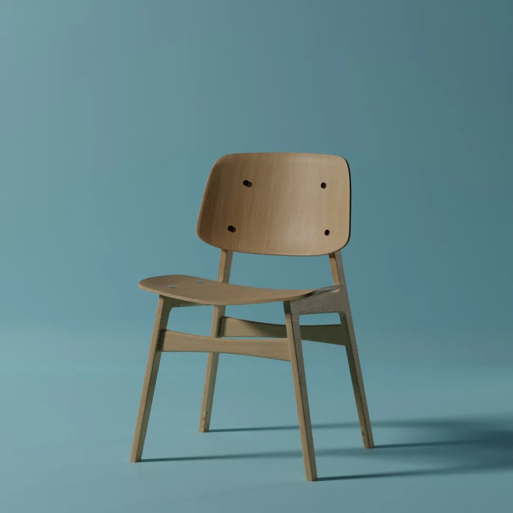

00:00:07:00Arte · 3D / Diseño industrial
Estudio de la silla Søborg
Un estudio 3D de la silla Søborg de madera, el clásico danés de los años 50 — de la investigación a una pieza virtual terminada.
- Categoría
- 3D / Diseño industrial
- Año
- 2023
- Herramientas
- Blender
La silla Søborg de madera es un ejemplo clásico del diseño danés que se fabrica desde los años 50: una silla minimalista, toda de madera, de líneas limpias y curvas elegantes. Este proyecto estudia su diseño con software 3D y construye un render de la silla.
Empieza con una investigación sobre el diseño de la silla y su historia, analizando en detalle su construcción para entender las piezas que la forman. A partir de ahí, un modelo 3D reproduce cada parte con sus medidas, como referencia de los matices del diseño.
La etapa siguiente mira el oficio de la carpintería a través del software —tallar, lijar y terminar— para entender la destreza que hay detrás de una silla como la Søborg, y después construye un prototipo virtual midiendo, cortando y dando forma a la madera virtual.
El proyecto termina con una versión acabada de la silla que encarna el espíritu del diseño danés.

Siguiente en ArteInfluencer IA y sistema de contenido
Helena von Arx →